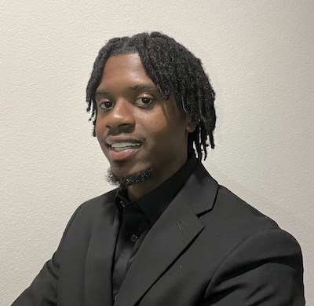

ITIS 3135 Introduction
Lawson, Malik
This is a public page. - ML 09/18/26
Malik Lawson ~ Mighty Lion

I am a Computer Science major specializing in Human Computer Interaction. My goal is to build industry ready skills and prepare for a successful career in tech. Looking forward to the journey ahead.
- Personal Background: Reidsville native, moved to Charlotte in 2024.
- Professional Background: Military veteran of nearly 7 years, now focused on completing my degree.
- Academic Background: Computer Science Human Computer Interaction class of 2028.
- Primary Work Computer (type, OS, and version): Macbook Air (macOS)
- Primary Work Location: Home office space.
- Alternate Computer & Location: Desktop & UNCC library.
-
Courses I'm Taking, & Why:
- ITSC 3688 - Computing and AI: Ethics, Society & Communication: To learn professional soft skills used in the tech industry.
- ITIS 4350 - Design Prototyping: To gain experience with design techniques.
- ITIS 3135 - Front-End Web Application Development: To understand the steps to build web applications.
- ITSC 2175 - Logic and Algorithms: Required for my degree.
- ITIS 3140 - User Experience Methods: To grasp UX/UI concepts used in the design process.
“A wise man will always follow the footsteps of great men”
- Niccolo Machiavelli